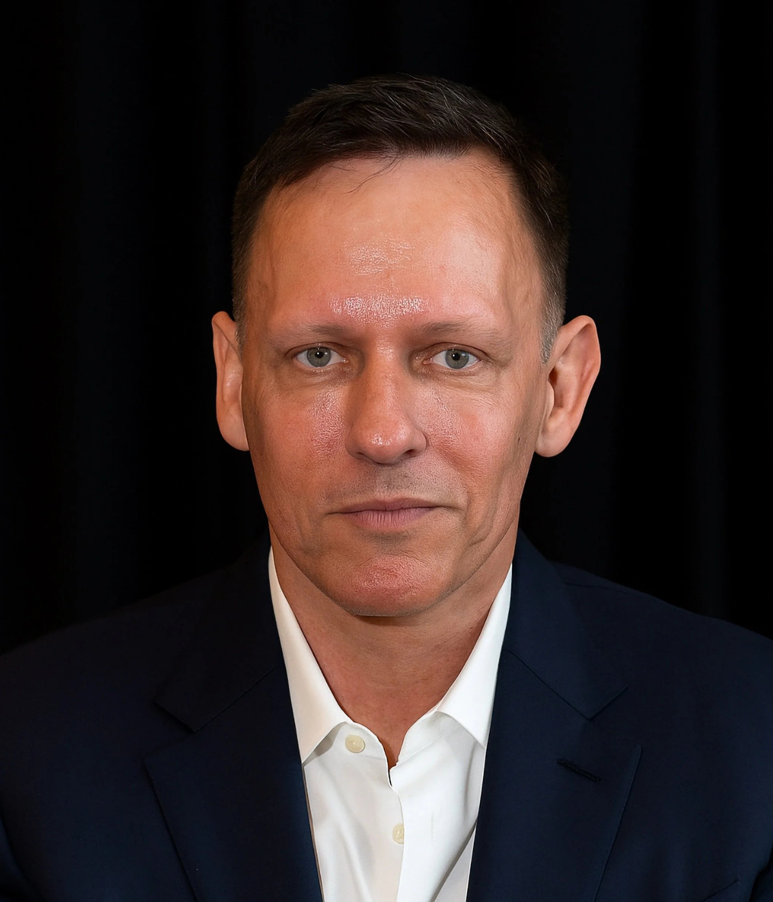

Conversations with Tyler · April 17, 2024
Peter Thiel on Political Theology
The founder on why the Enlightenment settlement failed, what Schmitt got right and wrong, why the Antichrist comes before Armageddon, and why AI will hit the math people first.

Peter Thiel. Photo: Intercollegiate Studies Institute.
Times marked ~ are proportional estimates from word position. The transcript carries no timestamps.
Index of nuggets
- The pin factory on steroids
- Do not scapegoat Mr. God
- The Bible takes the victim's side
- Three options on history
- No greater victim than Christ
- The friend-enemy machine only works unseen
- The millionaire, the general, and the priest
- Daniel, not Thucydides
- The Antichrist comes first
- Peace and safety
- You are not a lottery ticket
- Do not immanentize the katechon
- The fiercest fights are mimetic
- AI hits math first
- Centralization waves
- The hedgehog and the fox
- Huddle until you need it
- Apocalypse means unveiling
- Advice does not scale
- A real Marxist beats a diversity officer
~00:00
What Political Theology Means
Source fact The title phrase was first used by the Russian anarchist Bakunin to mock the Italian nationalist Mazzini, then picked up by the German legal theorist Carl Schmitt, who said everyone needs one. For Thiel it is a fuzzy, broad concept, motivated as a contrast. In late modernity we live in hyper-specialization, Adam Smith's pin factory on steroids, where no one can think about the big picture. Political theology, like political philosophy, tries to integrate the facets of life to make progress. The Enlightenment abandoned this for two reasons: it was too hard, a fool's errand, and it was too dangerous, too divisive. The Westphalia settlement of 1648 said forget religion, do not talk about it. That was perhaps a reasonable compromise in the 18th century. In the 21st, Thiel argues, it is more dangerous not to think about these things, and more dangerous to become ever smaller cogs in an ever bigger machine.
Source fact The political dimension starts with a question of scale: do you begin with the human scale or the microscopic, telescopic, atomic, cosmic scale? Following a Socratic turn, Thiel starts with common sense, the human world, politics, economics, society, culture, as the access point. There is some deep link between the university and the universe, between the failing multiversity and the crazed multiverse. You will never solve the cosmic questions first. Start with what has gone wrong in the university, and the universe comes into view.
Nugget 1 · Frames
The pin factory on steroids
What happened. Hyper-specialization made everyone a smaller cog in a bigger machine. Political theology is the attempt to think about the whole anyway.
Why it matters. The Westphalia deal, stop talking about religion, worked when the questions were small. The questions are not small anymore.
The principle. Start with the human scale. The universe comes into focus through the university, not the other way around.
~00:04
Why Not Calvinism
Source fact Tyler presses Thiel: you call yourself religious but not spiritual, which sounds Calvinist. Calvinism insists we know nothing about heaven, so claiming to know it is an arrogation of man's power, and the same logic kills spirituality. It is concrete, serious, takes governance literally. Why not just be Calvinist? Thiel answers that he is still mostly a libertarian. He finds redeeming things in Calvinism: it is so anti-utopian it helps in the battle against communism. But five-point Calvinism, total depravity, unconditional election, limited atonement, irresistible grace, perseverance of the saints, and he does not know if he agrees with even one of the five. On Roman Catholicism, his entire rebuttal is two words: the name of the current pope.
My two-word rebuttal to Roman Catholicism is Pope Francis.
Peter Thiel · Episode ~00:06
Source fact His Girardian argument against Calvinism: there is a deep link between gods and scapegoats. Archaic religion projects violence onto scapegoats and turns them into gods. Atheist liberalism does the same, blaming everything on Mr. God. Calvinism is the extreme form, where Mr. God did everything, determined everything, down to the blue jacket. We should be deeply distrustful of scapegoating Mr. God like that. Then the intellectual argument: if depravity means you cannot even think, there is no conversation to have. The medievals, in the Thomistic distinction, believed in the power of the intellect and the weakness of the will. The moderns reversed it. The effective altruist East Bay rationalists claim to be rational, but inwardly it is all spaghetti code, never right, maybe a little less wrong. They are much closer to Calvinism than they admit. He is against both.
Nugget 2 · Theology
Do not scapegoat Mr. God
What happened. Thiel turns Girard on Calvinism: blaming everything on a God who determined everything is just scapegoating with theology.
Why it matters. Total depravity ends the conversation. If no one can think, there is nothing to discuss, and Thiel wants the discussion.
The principle. Keep the intellect. A doctrine that forbids thinking forbids its own defense.
~00:09
The Bible Takes the Victim's Side
Source fact What did Thiel take from the Hebrew Bible? His views are fairly orthodox Christian: continuity between Old and New, with the Christian God as the original progressive, the first time the new is better than the old just by being new. Push that too far and you split the God of the Old Testament from the God of the New, and the 19th-century higher criticism that did this was deeply anti-Semitic. Too progressive ends in anti-Semitism. The Girardian intuition is the reversal of perspective: the Bible takes things from the side of the victim. Genesis gives us Cain and Abel, the founding of the first city, told from Abel's side, the opposite of Romulus and Remus, the founding of the greatest city, told from Romulus's side. The Exodus would normally be told from the Egyptians' side: troublemakers we got rid of. The inversion runs through the whole Old Testament.
Source fact Tyler proposes: read the Old Testament, conclude history is really bad, which is the central woke message, and side with the woke, forgiving the excesses as advertising. Thiel agrees the history was very bad and warns conservatives never to whitewash it: the happy-slaves argument is a loser argument. Christianity is worse than Islam or Judaism on this, because murdering God in the form of a person is a far greater violence, and then everyone is part of the matrix, so forgiveness is required. Three rough options: the Christian in-between, history is terrible but we must find forgiveness. The woke version, history is terrible and we forget forgiveness. The right-wing Nietzschean, Bronze Age Pervert version, we forget the history, we are sick of the guilt trip. The in-between is the most tenable, tensions included.
Three positions on a terrible history
Thiel's map of the responses. Only one keeps both the history and the forgiveness.
Illustrative, from Thiel's on-air three-option map (~00:11). Not measured data.
Nugget 3 · Reading
The Bible takes the victim's side
What happened. Cain and Abel is Romulus and Remus told from the loser's side. The Exodus is the expulsion told from the expelled. The perspective flip is the whole method.
Why it matters. Who tells the founding story decides what the city means. The victim's version is the innovation.
The principle. When you hear a founding story, ask whose side it is told from. Then tell it from the other side.
Nugget 4 · Judgment
Three options on history
What happened. History is terrible. The woke keep the verdict and drop forgiveness. The Nietzscheans drop the verdict. The Christian in-between keeps both.
Why it matters. Whitewashing is a loser argument, but so is verdict without forgiveness. The tenable position holds the tension.
The principle. Never trade the facts for comfort. Keep the terrible history and the forgiveness in the same hand.
~00:13
Relativize Your Victimhood
Source fact At a Harvard talk, Thiel suggested the left needed to learn to relativize its victimhood. The context: victimhood is unhealthy past a point. There are endless ways to identify as a victim, and he jokes about being a poor persecuted Peter person, with maybe an element of truth, exaggerated. Absolutize it and it turns unhealthy. The Christian division he proposed: it is okay to say you are a victim, up to a point. You cannot say you are a greater victim than Christ. Once you do that, you have lost perspective. On other holy books: the Western canon is the closest approximation. Shakespeare, Cervantes, Goethe were treated as semi-divine writers, and that is the attitude serious reading requires. The great books are not quite as holy as the Bible, so he probably does not read enough of them. Science fiction: he read a lot as a kid and almost none now. It is all too depressing.
Nugget 5 · Proportion
No greater victim than Christ
What happened. Victimhood is legitimate up to a point. The ceiling is Christ. Past it, perspective is gone.
Why it matters. A culture without a ceiling on victimhood has no way to rank claims. Everything becomes absolute, so nothing is.
The principle. Relativize the grievance. If it cannot survive comparison, it was not an argument.
~00:16
Schmitt and the Friend-Enemy Machine
Source fact Why the resurgence of interest in Carl Schmitt? He was one of the Weimar thinkers who came to prominence in 1920s Germany, and he got entangled with the Nazis, with very bad judgment, though he distanced himself a few years later. The Weimar moment matters: after World War I, Germany had lost, the throne-and-altar empire was gone, liberal democracy was unwanted, and deep critiques of political theology returned after being whitewashed since the Enlightenment. Thiel's image: the dwarves in Moria who delved too deep and woke the Balrog. There are parallels to the US in the 2020s, where liberalism looks exhausted and questions far outside the Overton window demand asking. Schmitt missed something crucial, though. His one powerful insight is from The Concept of the Political: politics is the division of friends and enemies, and you should not get sidetracked. The Reagan coalition is the application. What did the millionaire, the general, and the priest have in common at the dinner table? Nothing to talk about, yet the coalition worked. The answer: they were anti-communist. A common enemy. That was Thiel's formative political idea as a teenager in the late 1970s and early 1980s, and when the Berlin Wall fell in 1989, the constellation disintegrated.
Source fact Where Schmitt goes haywire: is politics a market, where understanding it makes it work better, or a scapegoating machine that only works if you do not look inside? Tell the village you will achieve unity by accusing a random elderly woman of witchcraft, and the trick fails once everyone sees the mechanism. Schmitt had an optimistic Enlightenment rationality: describe the friend-enemy division plainly and the political strengthens. Thiel thinks it probably accelerated the disintegration instead.
The Reagan coalition: three strangers, one enemy
The millionaire, the general, and the priest had nothing to discuss. Anti-communism did the work.
Illustrative, from Thiel's on-air account (~00:19). Not measured data.
Nugget 6 · Politics
The friend-enemy machine only works unseen
What happened. Schmitt thought naming the friend-enemy division would strengthen politics. Thiel argues the scapegoating machine breaks once the village watches the sausage-making.
Why it matters. Transparency kills some mechanisms and saves others. Know which kind you run before you turn on the lights.
The principle. Ask whether your coalition survives self-awareness. If it needs the dark, it is not a coalition but a trick.
Nugget 7 · Coalitions
The millionaire, the general, and the priest
What happened. Three strangers with nothing to say to each other held together for a decade on one shared enemy. When the enemy fell in 1989, so did the coalition.
Why it matters. Negative coalitions are powerful and brittle. They mobilize fast and dissolve the moment they win.
The principle. Build on a common enemy and budget for the morning after the victory.
Weimar at dusk. AI-generated watercolor made for this page. Thiel compares the Weimar thinkers to the dwarves in Moria, digging too deep and waking the Balrog.
~00:23
Daniel, Not Thucydides
Source fact Tyler asks whether Schmitt misses the cyclicality of history: liberalism collapsed in Weimar in the 1920s, which was the correct prediction, but the same prediction failed in West Germany in 1948, when liberalism came back. Thiel prefers the one-time and world-historical over the timeless and eternal. Every moment happens once. History has meaning and a linearity, the Judeo-Christian view, against the classical Greco-Roman cyclical one. Thucydides gives you a great age of peace, Periclean Athens, collapsing into the war with Sparta, and readers after World War I reached for it because a hundred years of peace after Napoleon had done the same. But none of the details matter in Thucydides, and he invents the speeches. Against this, the Book of Daniel: a succession of four kingdoms, a one-time world history where everything is unique, not to be repeated. The real first historian was Daniel. Thucydides is not even close. As for Rome and the EU: we have nuclear weapons now, and they did not, not even in 1900. The science and technology arc alone makes the parallel unserious.
Nugget 8 · History
Daniel, not Thucydides
What happened. Thucydides offers cycles with invented speeches. Daniel offers a one-time succession of kingdoms where every event is unique.
Why it matters. Cyclical frames comfort and mislead. They worked in 1920s Weimar and failed in 1948 Bonn. Linearity keeps you alert to the unprecedented.
The principle. Distrust the historical rhyme. Ask what has never happened before, and start there.
~00:24
The Antichrist Comes First
Source fact Are we entering a new millenarian age like the English 17th century, fertile, crazy, a king executed? Thiel calls the frame absurdly cyclical and says no moment repeats. But yes, there are apocalyptic elements, and they come from a nonreligious place: science and technology. Nuclear weapons after 1945, environmental degradation, bioweapons, the Wuhan lab question, AI. Girard liked to note that the Catholic Church used to preach the end times during Advent, then stopped after 1945, to reassure people that nuclear weapons had nothing to do with Armageddon, even though the first test was called Trinity and the rockets carried names like Saturn and Jupiter. To the standard list of existential risks, Thiel adds one more: a one-world totalitarian government, at least as scary as the rest. In biblical eschatology you worry about Armageddon, but you also worry about the Antichrist, and the Antichrist comes first. The path through the apocalyptic age runs between the Scylla of existential risks and the Charybdis of totalitarian catastrophe.
Source fact The two best fictional Antichrists were written before World War I: Robert Hugh Benson's Lord of the World (1908) and Solovyov's War, Progress, and the End of History (1900). Both show a future world dictator taking over through hypnotic speeches no one can remember, a daemonium ex machina. After 1945 the literary version writes itself: the Antichrist comes to power by constantly talking about Armageddon, by telling scary millenarian stories. One World or None, the nuclear scientists' short film, said give the weapons to the one-world government or the world blows up. So the existential-risk discourse itself is the Antichrist's campaign literature. Thiel's answer is complicated: the risks are real, do not dismiss them, but the proposed cure, effective global government, global compute governance, policing heterodox ideas, as in the 2019 Bostrom essay, is at least as scary as the disease. Dr. Strangelove or Greta: Strangelove is more dangerous, but putting everyone on a bicycle takes real enforcement.
Life is a tale told by an idiot, full of sound and fury, signifying nothing.
Macbeth, quoted by Peter Thiel · Episode ~00:45
Nugget 9 · Risk
The Antichrist comes first
What happened. Armageddon gets the attention, but the Antichrist arrives first. The one-world totalitarian state is the nearer catastrophe.
Why it matters. Every existential-risk campaign that demands global government auditions for the role it warns about.
The principle. Price the cure with the disease. A cure that needs a world state is not a cure.
Nugget 10 · Language
Peace and safety
What happened. Thiel cites 1 Thessalonians 5:3 as the Antichrist's political slogan: "peace and safety." The world moved far more toward peace-and-safety than toward chaos: the Patriot Act, money-flow tracking, the vanishing Swiss bank account.
Why it matters. Totalitarianism arrives as protection, not as menace. The slogan tells you what to watch for.
The principle. When safety is the pitch, read the fine print. Exit is the liberty that matters, and it keeps getting harder.
The apocalyptic age. AI-generated watercolor made for this page. Thiel's apocalypse comes from human sources, science and technology, not from God.
~00:33
Against Muddling Through
Source fact What variable tracks whether the West muddles through? Thiel says it is not really an empirical question. Accept the empirical frame and you have already lost half the argument: the sun rose every day, so it will keep rising, so do not worry. The post-Cold War globalization story said goods, people, ideas, and money would move, the world would integrate, do not sweat the details, we will muddle through. Then the US-China story went haywire in ways Fukuyama's 1989 vision never imagined, and the alarm bells would have rung sooner without the muddling-through lullaby. It is somewhat analytic rather than metaphysical, and moral: talking about muddling through lays down a duty. Whenever people think they can just muddle through, they are probably set up for disaster. His Zero to One chapter made the investor version of the same point. Writing checks to everyone on South Beach and calling it a strategy is a formula for losing all your money.
You are not a lottery ticket.
Peter Thiel, from Zero to One · Episode ~00:36
Source fact The muddling-through view and the Calvinist view share a flaw: distrust in human agency, distrust in human thought, distrust in our ability to make choices. Muddling through can be Calvinist, can be rationalist. It is anti-intellectual. It is not thinking about things.
Nugget 11 · Agency
You are not a lottery ticket
What happened. Diversified drift is not a strategy. The investor who writes checks to everyone has a formula for losing money, and the civilization that muddles through has the same formula at scale.
Why it matters. Muddling through feels humble and acts reckless. It is distrust of human agency wearing the mask of prudence.
The principle. Choose. Thinking is the job, and drift is the abdication.
~00:38
The Katechon
Source fact Tyler suggests the katechon is Thiel's substitute for muddling through: things have not collapsed, so something must hold the finger in the dyke. Thiel calls it a very mysterious idea. Why has the Antichrist not taken over yet? Something restrains the totalitarian one-world state. But he does not put too much stock in it. On its own terms it is unstable, provisional, archaic, sacred, and you cannot identify it with an institution. If you are not supposed to immanentize the eschaton, you are also not supposed to immanentize the katechon. Name it too concretely and it goes wrong. The Girardian cut: anything set up as the opposite is mimetically entangled with what it opposes. There is always a risk the katechon becomes the Antichrist. The proto-Antichrist was Nero. Claudius, the good emperor, was the katechon restraining him. But they were both Roman emperors.
Source fact From 1949 to 1989, Thiel identifies the katechon as anti-communism, and communism as the Antichrist's 20th-century ideology. What stopped communism was not one country, not a libertarian debating society. It was something violent, hard to morally justify, not very Christian, but unifying. Then the morph: 1989, anti-communism becomes neoliberalism, becomes Bush 41's new world order, governing the world in the name of anti-communism. The logic was always misleading: anti-communism aspires to stop the communists from getting world control, not to take world control itself. Once the communists are defeated, you are supposed to go home. Instead the machine perpetuates itself. And the Antichrist may come to power precisely by acting as katechon. Greta presents as the katechon stopping climate change. The concept is useful, but Thiel would not put too much weight on it.
The katechon, 1949 to 1989, and its morph
Anti-communism restrained the Antichrist's ideology, then became the thing it fought.
Illustrative, from Thiel's on-air account (~00:40). Not measured data.
Nugget 12 · Power
Do not immanentize the katechon
What happened. Anti-communism worked as the restrainer for forty years, then morphed into the new world order: the katechon becoming the Antichrist.
Why it matters. Every restraining force is mimetically entangled with its enemy. Name it as an institution and it starts to imitate what it restrains.
The principle. Let the restrainer stay mysterious. The moment you can point at it, it has already changed sides.
~00:42
Human Agency and the Individual
Source fact Is all this weight on human agency compatible with Lutheranism? Thiel is not a perfect Lutheran. On predestination and the chosen, Moses, Abraham: the Bible points toward agency through the anti-sacrificial theme. The idea of the individual came out of a context where the state was not absolute, not sacred, not providential. Girard's line: Christ was the first political atheist. The political reading is that Caesar Augustus, son of the divinized Caesar, is not exactly the Son of God, and the Roman Empire is not divinely ordained. That opens a space for a less unitary system, though it took many centuries to develop. Thiel even calls Ayn Rand a pretty good Christian in this sense, and admits it is scandalous to say: it is Jewish and atheist and shrill and crazy, but you cannot sacrifice the individual, your mind, your reason.
Nugget 13 · Mimesis
The fiercest fights are mimetic
What happened. Shakespeare against Marx: Marx says battles come from real differences of class and interest. Shakespeare says the most intense conflicts come when the parties do not differ at all. The Capulets and Montagues are "alike in dignity," two houses identical, and that is why they hate each other.
Why it matters. Ideological differences may be the cover story. The engine is mimetic rivalry between doubles.
The principle. When a conflict looks ideological, check for identity. The fiercest enemies are usually twins.
~00:44
Shakespeare vs Marx
Source fact Thiel quotes The Tempest in his talks. What is the Shakespearean political vision against the Christian one? It is hard to know what Shakespeare thought. The idiot's-tale speech is Macbeth's line, not Shakespeare's, maybe a Christian nihilism. The contrast Thiel draws is with Marx: Marx believed battles came from objective differences, classes with different interests. Shakespeare is proto-Girardian, mimetic. Romeo and Juliet opens with two houses identical in rank. Hamlet says the truly great take everything for an eggshell: average people fight over things that matter, great ones fight over honor or an eggshell. Shakespeare would distrust today's extreme ideological differences, a kind of political atheism. On Julius Caesar: Tyler notes there is no katechon, no muddling through, so they sacrifice Caesar, and the civil war kills far more with no end in sight. The pessimistic scenario of the Thiel mental universe. Thiel answers with reenactment: Brutus thinks he reenacts his ancestor's overthrow of Tarquin in 509 BC, motivated by future applause, centuries hence people reenacting this on a stage. John Wilkes Booth literalized it in 1865, a Shakespearean actor shouting the classic tyrannicide motto, thinking he was Brutus. Lincoln's 1838 Young Men's Lyceum address coded himself as a proto-Caesar, warning of the ambitious man for whom the presidency is not enough, who would enslave the white people or free the slaves. It was a bad idea for Brutus, and the Booth story is sad. The cycle is what we want to transcend.
~00:49
AI: Worse for the Math People
Source fact Will the wordcels lose their influence to large language models? Thiel's intuition is the opposite: it looks much worse for the math people than the word people. Within three to five years, AI models may solve all the US Math Olympiad problems. The bias toward testing math ability dates to the French Revolution: verbal ability was thought to run in families, while math ability was distributed in an idiot-savant way through the population, so prioritizing math had a meritocratic, egalitarian effect. By the Soviet 20th century, giving the number theorist or chess grandmaster a medal was perhaps a control mechanism: put the clueless math person on a pedestal, tell everyone to be like them, and you control things. Silicon Valley in the early 21st century is way too biased toward the math people, deeply unstable. Thiel's own chess bias in the late 1980s and early 1990s, test everyone on chess, why not, got undermined by computers in 1997. Math faces the same rebalancing, long overdue. Weeding medical students through physics and calculus has little to do with dexterity as a neurosurgeon. He does not want his brain surgeon doing prime factorizations mid-operation.
Source fact On manual labor, Thiel declines the answer and offers questions instead: how much will AI increase GDP versus inequality? Is it a centralizing technology? His old riff: if crypto is libertarian, AI might be communist, with incredible returns to scale. San Francisco looked finished, but AI's scale economies might save it. Geopolitics: the pro-China case is that China will not hesitate to train AI on all its people, so it implements faster. The pro-US case is that America is ahead, and a model that cannot answer who Winnie the Pooh is gets nerfed into uselessness. If AI helps the US more, it is massively destabilizing: China had a low-volatility plan to slowly beat the West, and a volatility-increasing technology it cannot match may accelerate its timetable toward Taiwan.
Nugget 14 · Technology
AI hits math first
What happened. The math bias started as French Revolutionary egalitarianism and ended as a control mechanism. Chess fell in 1997. Math Olympiads are next, in three to five years.
Why it matters. Every selection metric is a bet on what machines cannot do. When the bet loses, the whole sorting system has to be rebuilt.
The principle. Ask what your credential actually measures. If a machine can pass the test, the test was never the skill.
~00:57
The Hedgehog and the Fox
Source fact What will Thiel learn about next? He deflects with Isaiah Berlin: the hedgehog knows one thing, the fox knows many. Tyler is the fox. Thiel is the hedgehog, circling a few core ideas: the wonderful and terrible history of the world we inhabit, Christianity's unraveling of our culture, and the way to the other side. That will keep him busy for a long time.
Nugget 15 · Centralization
Centralization waves
What happened. The computer age was centralized in the late 1960s, one big machine running the planet, decentralized by the late 1990s, and centralizing again by the late 2010s. The Sovereign Individual's 1997 decentralization thesis looked true in 1999 and false by the 2010s.
Why it matters. Technology's direction is not written in stone. Each wave felt permanent and was not.
The principle. It is up to us which way the technology pushes. Work on it instead of predicting it.
Nugget 16 · Vocation
The hedgehog and the fox
What happened. Asked what is next, Thiel names his one big thing: the wonderful and terrible history of a culture unwinding from Christianity, and the path to the other side.
Why it matters. The fox samples everything. The hedgehog returns to one question for decades. Both are valid, but only one compounds.
The principle. Pick the question that will still matter in twenty years. Then stay with it.
~00:58
The Audience
Source fact The audience Q&A runs nearly half an hour. On Bitcoin and the one-world order: Thiel is still hopeful that on net Bitcoin sits on the anti-one-world-order side, judging by its enemies, though that may be too simplistic a Schmittian read. Genuine anonymity matters. Physical cash may still beat Bitcoin for questionable purposes, and the crypto-anarchist utopia of the late 1990s never arrived. But as a one-time way to get money outside a particular government's control, it is still extremely good for that. "You can huddle until you need it." On Bostrom and communism converging on world government: both are optimistic about human nature and share an Enlightenment rationality where one best modality of governance should rule everywhere. Only deep doubts about human nature or the rulers break the spell.
Source fact On buying an extra year of life: Thiel rejects hypotheticals whose premise he disbelieves, and would pay the questioner nothing, since the seller would be long gone by collection time. On the Straussian messages of the Bible: apocalypse in Greek means unveiling, and unveiling the social order can deconstruct it. Girard's I See Satan Fall Like Lightning: to see Satan is to see Satan fall, so Satan appears to humans only at the end of the world. The desert temptation is the libertarian cut: worship me and have all the kingdoms, which says governments are more satanic than divinely ordained. On The Sovereign Individual: the 1997 decentralization thesis looked true in 1999, centralizing by the 2010s. Star Trek's 1968 future had one supercomputer running the planet for 8,000 uneventful years. Nothing is written in stone. On open-source AI: the Linux versus Microsoft precedent probably changed little at the operating-system level. On p(doom): he is not a Calvinist, not an effective altruist, not a doomer. He worries more about the humans trying to stop the AI than about the AI. A force powerful enough to stop the AI is powerful enough to destroy the world too.
Source fact On Ayaan Hirsi Ali's conversion: utilitarian elements are fine, but his bias is toward truth. On Lincoln's Lyceum address: the Caesar-Napoleon figure who would enslave the white people or free the slaves plausibly meant Lincoln himself. On personal responsibility and mimesis: tracked and competitive as a kid, Stanford in four years as the yearbook predicted, top Manhattan law firm, then a quarter-life crisis. The lesson was to avoid the worst mimetic entanglements, though psychology and awareness alone do not do it. On scaling the Thiel Fellowship: the paradox is that advice does not scale. Automate it into a cookie-cutter process and it deranges. Telling people to think for themselves, scaled up, becomes Mao's Little Red Book. On DEI: he is very against it. The Diversity Myth, his book on the Stanford campus wars of the late 1980s and early 1990s, looks prescient in parts. Walmart was the proto-woke company of the 2000s: attacked by unions over wages, it rebranded green, a cheap way to split the anti-Walmart left. A real Marxist would be preferable to a diversity officer. Rosa Luxemburg said nobody is more revolutionary than the factory worker. A diversity officer would land, in her categories, with the bank robber and the prostitute: corrupt crony capitalism.
Source fact On biotech: the FDA has a global stranglehold. Most governments will not go looser than the FDA, and without the US market the economics fail. It is US or bust. On the Luddites: they stayed wrong for a long time, but even if AI replaces people outright, he still favors the AI, because muddling through is not good and the default is really bad. You do not get to muddle through with Greta on her bicycle. On what stops AI: the premise is what he challenges. If only one technology matters, you have already conceded centralization. Technology used to mean computers, medicines, spaceships, supersonic planes, the Green Revolution. Now it means IT, maybe just AI. The narrowing is itself the centralizing stagnation. On Miami versus San Francisco: he is still pro-Miami, more an anti-New York story, finance not needing New York. Crypto decentralized things and Silicon Valley missed it. AI is even more centralized in Silicon Valley. On world order: he wants a libertarian order of many nations with movement between them, but the transnational layer cannot be strong enough to control the nations. A paradox, and too concrete a picture is probably bad. On Miami governance: four winters there, two to three months each. The Georgist worry is whether all the value gets captured by a corrupt real estate group, the San Francisco, New York, London disaster where GDP rises and slum lords take all of it. On AI as god, via Voltaire: the political theology question matters more than the metaphysical one. If a centralizing AI is controlled by communist China, will it convince people the Party is God? The models will all say no religion is truer than another. Is that what they generate, or what was hardwired in?
Centralization waves in computing
Each era felt permanent. None was.
Illustrative, from Thiel's on-air account (~01:05). Not measured data.
Nugget 17 · Money
Huddle until you need it
What happened. Bitcoin never delivered the crypto-anarchist utopia, and cash still beats it for some uses. But as a one-time exit from a government's control, it remains extremely good.
Why it matters. Judge an exit technology by the exit, not the utopia. One use at the critical moment justifies the holding.
The principle. Keep one path out that no one can close. You may never use it. That is the point.
Nugget 18 · Reading
Apocalypse means unveiling
What happened. In Greek, apocalypse means unveiling. Tell people the secret messages and the social order unravels. To see Satan is to see Satan fall, so Satan appears to humans only at the end.
Why it matters. Some truths destroy what they reveal. Esoteric restraint is not cowardice but engineering.
The principle. Before unveiling, ask what the veil held up.
Nugget 19 · Scale
Advice does not scale
What happened. The Thiel Fellowship cannot grow by formula. Automate independent thought into a process and you get the Little Red Book.
Why it matters. Scaling changes the thing scaled. The cookie-cutter deranges exactly what made the original work.
The principle. Do not scale the unscalable. Keep it small or lose it.
Nugget 20 · Institutions
A real Marxist beats a diversity officer
What happened. Thiel prefers Rosa Luxemburg to the DEI apparatus. Luxemburg said nobody is more revolutionary than the factory worker. The diversity officer, in her categories, sits with the bank robber: crony capitalism.
Why it matters. The critique from the left is sharper than the critique from the right. It judges the institution by its own claimed values.
The principle. When judging a bureaucracy, use its enemies' standards, not its own press releases.
~01:27
Watch the Episode
Full episode via youtube-nocookie. Times marked ~ in this companion are proportional estimates from the transcript.
The episode in seven lines
- Political theology integrates what hyper-specialization splits. Start with the human scale.
- History is linear, not cyclical. Daniel, not Thucydides.
- The Antichrist comes first. Price the cure for existential risk like the disease.
- Muddling through is not a strategy. You are not a lottery ticket.
- Do not immanentize the katechon. The restrainer can become the thing it restrains.
- The fiercest conflicts are mimetic: the houses alike in dignity.
- Technology's direction is not written in stone. It is up to us.
Distilled from Conversations with Tyler, Peter Thiel on Political Theology (April 17, 2024). Full episode: youtube.com/watch?v=vfbndRTlsg4. Transcript: research/conversations-with-tyler/transcripts/vfbndRTlsg4.txt.